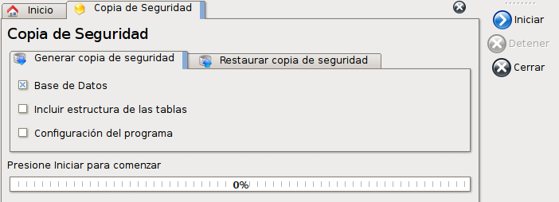

El sistema de copias de seguridad le permite generar un archivo con todos los datos que posee el programa para guardarlo en una ubicación segura de su elección. Además le mostrará un aviso cuando haya pasado un tiempo sin realizar una copia de seguridad.
Para acceder a la pestaña que le permitirá realizar la copia de seguridad, puede hacerlo desde la pestaña de inicio, mediante el icono de copia de seguridad.
O a través del menú Archivo -> Backup.

Dentro de esta ventana se puede ver que existen 3 posibilidades para agregar a la copia de seguridad:
- Base de Datos: Copiará todos los datos que se encuentren en el programa. Es la opción más común y la más necesaria. No incluye la estructura de las tablas contenedoras de los datos.
- Estructura de tablas: Incluye la estructura de tablas para cuando se desea copiar totalmente la base de datos.
- Configuración del programa: Copiará las preferencias que tenga elegidas en la ventana de preferencias del programa.
Utilizando las 3 opciones generará una copia completa de todo el programa. Esto es muy útil para cuando se desea mudar de computadora el programa.
Se recomienda utilizar la primera opción si se desea realizar una copia de seguridad diaria o semanal.
Finalmente, al presionar el botón Iniciar se iniciará el proceso de copia de seguridad.
El proceso finalizará y le pedirá guardar el archivo de base de datos. Coloque este archivo en un lugar accesible o su medio de copia de seguridad.
El formato del nombre del archivo será el siguiente: <año><mes><dia>.bkp.
Así, por ejemplo, el día 18/07/2011 tendrá como nombre 20110718.bkp.

El programa le brinda la opción de colocar un recordatorio de copia de seguridad.
Esta notificación aparecerá en la esquina inferior derecha del programa y estará presente en todo momento.
Al hacer click sobre la notificación, se abrirá automáticamente la ventana para generar una nueva copia de seguridad.
Es posible configurar la frecuencia con la que aparecerá la notificación desde las preferencias del programa. Consulte la sección de preferencias para más información.